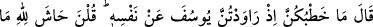

Burada töhmetleri ortadan kaldırmaya ve töhmete sebep olacak yerlerden sakınmaya
çalışmak gerektiğine delil vardır. Bir hadiste şöyle buyrulur: “Kim Allah’a ve âhiret
gününe inanıyorsa kendisini töhmet altında bırakacak yerlerden uzak dursun.”[49]
Peygamberimiz îtikafta iken bir ara yanına hanımlarından birisi gelmişti. O sırada
yanına uğrayanlara, Hz. Peygamber (a.s.)’ın töhmeti kaldırmak için: “Bu kadın, falanca
eşimdir.”[50] buyurması bu kabildendir.
Kral kendisini dâvet ettiği halde zindandan çıkmakta acele etmeyerek büyük bir iç
güven ve sabırla hareket eden Yûsuf (a.s.)’ın bu tutumunu Hz. Peygamber (s.a.)’in çok
beğendiği ve şöyle buyurduğu rivâyet edilmiştir: “Yûsuf ’a, keremine ve sabrına hayret
ediyorum. Allah kendisini bağışlasın, kendisine o semiz ve zayıf ineklerin neyi
gösterdiği sorulduğunda onun yerinde olsaydım, beni zindandan çıkarmalarını şart
koşmadan bir şey söylemezdim. Yine elçi kendisine gelip de elçiye: ‘Efendine dön ve
ona... sor’ demesine de hayret ediyorum. Ben onun yerinde olsaydım ve onun kadar
zindanda kalsaydım, hemen cevap verir, kapıya koşardım. Mazeretimi anlayıp
anlamamalarına önem vermezdim. Yûsuf gerçekten hilim sâhibi ve teennî ile hareket
eden biriymiş.”[51]
İbnü’l-Melek der ki: “Bu hadis Peygamber Efendimiz (s.a.)’in sabırsız ve aceleci
olduğunu göstermez. Aksine burada Yûsuf (a.s.)’ın itham edildiği ağır suç kralın
kalbinden zâil olsun ve kendisine şüpheci gözlerle bakmasın diye zindandan çıkmakta
acele etmemesi ve sabretmesi medhedilmektedir.”
Tıybî der ki: Rasulullah (s.a.)’in bu ifadesi, tevâzû îcâbı söylenmiş bir sözdür. Yoksa
O teennî ile hareket etmeyen aceleci biri olduğu için böyle konuşuyor değildir. Tevâzu
ise ne büyük birini küçültür ne de yüce birini alçaltır. Aksine tevazu, sahibi için bir
fazîlettir, onu yüceltir ve kıymetini artırır.
“Şüphesiz benim Rabbim” olan Allah “onların” kadınların “Sâhibine itâat et”
derken kurdukları “hîlesini çok iyi bilir” dedi.”
Bu ifadede kendisinin suçsuz olduğuna, kadınların ise kendisine tuzak kurduğuna
Allah’ın bilgisini şâhid tutmak söz konusudur. Sanki şöyle demiş oluyor: ‘Onu
araştırmaya sevk et. İşte o zaman suçsuz olduğum ortaya çıkar. Çünkü Allah olanların
kadınların hîlesinden ibâret olduğunu biliyor.’
O yiğit bu sözü şâha söyleyince
Mısır’ın kadınlarına haber verdiler,
Onları pâdişâhın önüne topladılar
Hepsi o mumun pervanesi oldular